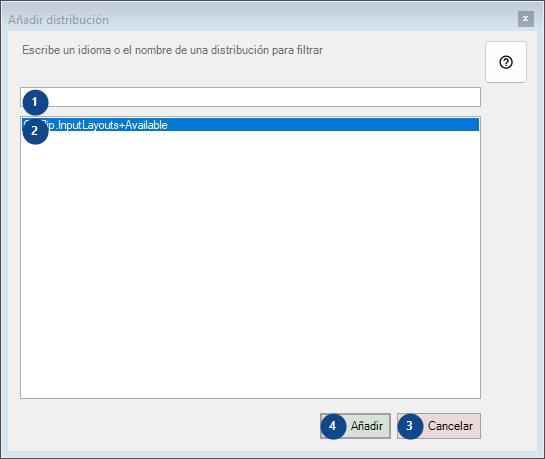
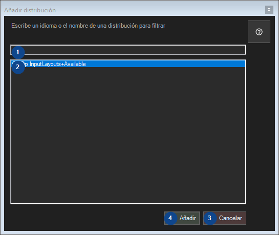

Añadir distribución
Para qué sirve
Lee las explicaciones numeradas, elige los valores necesarios y continúa con el comando de la ventana.


Orden de uso
Lee las explicaciones numeradas, elige los valores necesarios y continúa con el comando de la ventana.
Elementos
1. Escribe un idioma o el nombre de una distribución para filtrar
Elige o introduce el valor de la etiqueta contigua. Revísalo antes de continuar.
Tus atajos2. Escribe un idioma o el nombre de una distribución para filtrar
Esta zona muestra el contenido o estado actual. Selecciona una entrada para trabajar con ella.
Tus atajos3. Cancelar
Usa este comando para la acción indicada. Lee cualquier confirmación antes de aceptarla.
Tus atajos4. Añadir
Usa este comando para la acción indicada. Lee cualquier confirmación antes de aceptarla.
Tus atajos